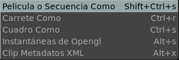

El Menu de Archivo Grabar

El menu de Archivo Grabar Pelicula o Secuencia Como te permite grabar una película o una secuencia de imagenes, dependiendo de la extensión usada.
El Grabar Carrete Como es una opción que permite grabar el Carrete como una simple LDE.
El Grabar Cuadro Como permite grabar una sola imagen.
El Grabar Instantáneas de GL te permite grabar instantaneas de tu vista de opengl como una película o una secuencia de cuadros. Esta opción graba saves las anotaciones y el HUD, por ejemplo, pero no respetara el tamaño de la imagen original, sino el tamaño de la ventana.
Y tambien te permite Grabar un Clip Metadatos XML, que graba las transformaciones ACES CTL aplicadas para manejo de LUT.